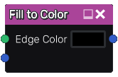

Fill to Color node¶
The Fill to Color node uses the output of the Fill node and fills all detected areas with a color taken from its other input.
Inputs¶
The Fill to Color node accepts the output of a Fill node (or a compatible output of another node) as first input. The second input it a color image the output colors are taken from.
Outputs¶
The Fill to Color node generates a single color image map whose color if taken from its other input, at the center of each area.
Parameters¶
The Fill to color node accepts the value of the color of edges in the generated output as parameter.
Example images¶